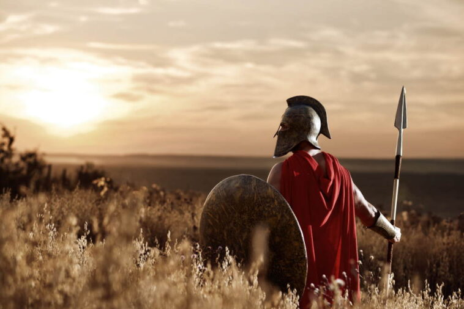

City of Sparta
Sparta was one of the most powerful city-states in Ancient Greece.
It is famous for its powerful army as well as its battles with the city-state of Athens during the Peloponnesian War.
Sparta was located in a valley on the banks of the Eurotas River in the south-eastern portion of Greece.
The lands it controlled were called Laconia and Messenia.
Warrior Society
Unlike their counterparts in the city of Athens, the Spartans didn't study philosophy, art, or theatre, they studied war.
The Spartans were widely considered to have the strongest army and the best soldiers of any city-state in Ancient Greece.
All Spartan men trained to become warriors from the day they were born.
The Spartan Army
The Spartan Army fought in a Phalanx formation. They would line up side by side and several men deep. Then they would lock their shields together and advance on the enemy stabbing them with their spears.
The Spartans spent their lives drilling and practicing their formations and it showed in battle. They rarely broke formation and could defeat much larger armies.
The basic equipment used by the Spartans included their shield (called an aspis), a spear (called a dory), and a short sword (called a xiphos). They also wore a crimson tunic so their bloody wounds wouldn't show.
The most important piece of equipment to a Spartan was their shield. The biggest disgrace a soldier could suffer was to lose his shield in battle.
Social Classes
Spartan society was divided into specific social classes.
- Spartan - At the top of Spartan society was the Spartan citizen. There were relatively few Spartan citizens. Spartan citizens were those people who could trace their ancestry to the original people who formed the city of Sparta. There were a few exceptions where adopted sons who performed well in battle could be given citizenship.
- Perioikoi - The perioikoi were free people who lived in Spartan lands, but were not Spartan citizens. They could travel to other cities, could own land, and were allowed to trade. Many of the perioikoi were Laconians who were defeated by the Spartans.
- Helot - The helots were the largest portion of the population. They were basically slaves or serfs to the Spartans. They farmed their own land, but had to give half of their crops to the Spartans as payment. Helots were beaten once a year and were forced to wear clothing made from animal skins. Helots caught trying to escape were generally killed.
Interesting Facts about Sparta
- Boys were encouraged to steal food. If they were caught, they were punished, not for stealing, but for getting caught.
- Spartan men were required to stay fit and ready to fight until the age of 60.
- The term "spartan" is often used to describe something simple or without comfort.
- The Spartans considered themselves to be direct descendents of the Greek hero Hercules.
- Sparta was ruled by two kings who had equal power. There was also a council of five men called the ephors who watched over the kings.
- Laws were made by a council of 30 elders which included the two kings.